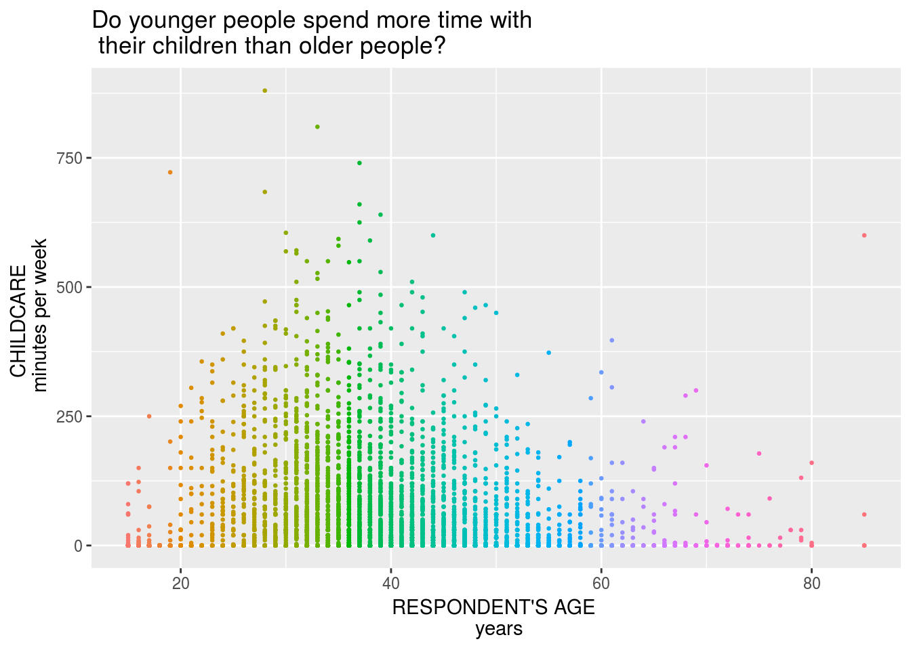
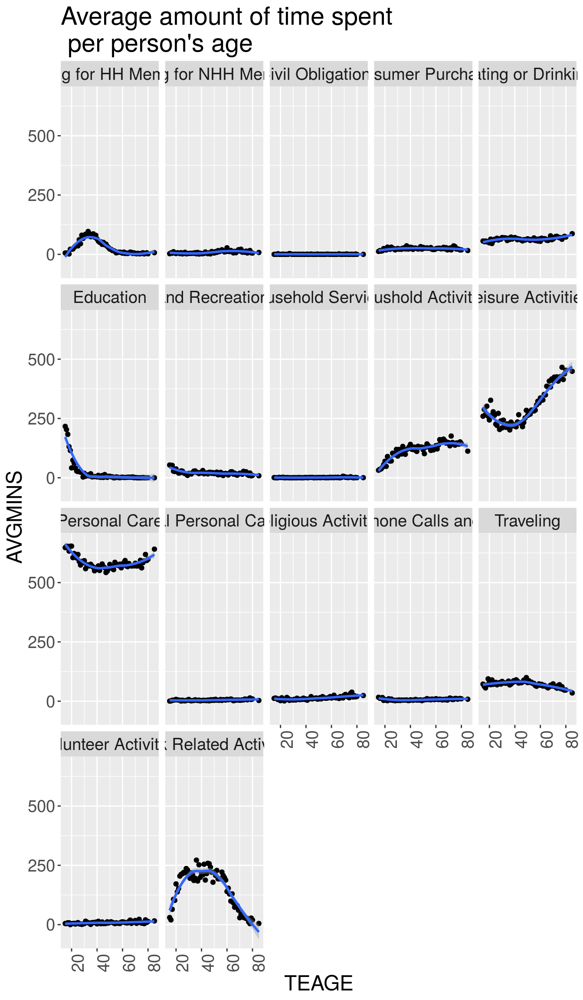
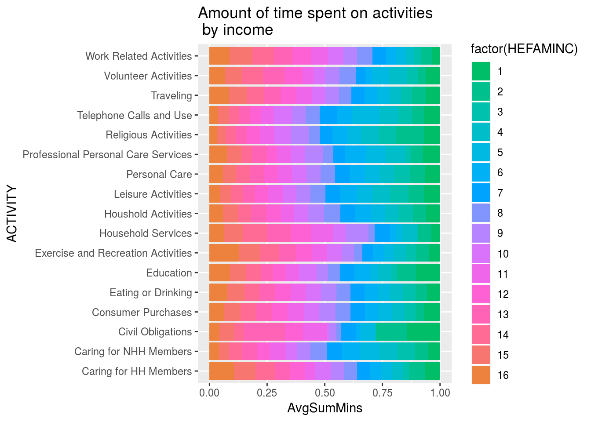

Intro & Background
This survey was created to test our cohort’s strengths in data visualization, data wrangling and data tidying. The American Time Use Survey is a public survey which enlists how Americans use their time in liesure, work and extra curricular activities. This data can be used in a variety of cross analysis’ and formats for companies within and outside of the United States.
Data
The American Time Use Survey (ATUS) is a time-use survey of Americans, which is sponsored by the Bureau of Labor Statistics (BLS) and conducted by the U.S. Census Bureau. Respondents of the survey are asked to keep a diary for one day carefully recording the amount of time they spend on various activities including working, leisure, childcare, and household activities. The survey has been conducted every year since 2003.
You can find the data dictionaries for each year on https://www.bls.gov/tus/dictionaries.htm
#load data from data files onto the workspace
atus.cps <- read.delim('/cloud/project/website/content/project/atus_survey/raw_data/atuscps_2016.dat', sep=",")
atus.sum <- read.delim('/cloud/project/website/content/project/atus_survey/raw_data/atussum_2016.dat', sep=",")
# joining both files together by respondents' ID
atus.all <- atus.sum %>%
left_join(atus.cps %>% filter(TULINENO==1), by = c("TUCASEID"))Exploratory Data Analysis
## write out al columns up to t030112 for sum of CHILDCARE column.
atus.all <- atus.all %>%
mutate(CHILDCARE = t030101 + t030102 + t030103 + t030104 + t030105 + t030106 + t030108 + t030109 + t030110 + t030111 + t030112 %>%
glimpse(CHILDCARE))#exclude all missing factors
## replace -1 in the variable TRDPFTPT with NA.
atus.all$TRDPFTPT[atus.all$TRDPFTPT == -1] <- NA %>%
sum(is.na(atus.all$TRDPFTPT))##take this away, filter once done.
grep("TRHHCHILD",names(atus.all))## integer(0)#find the amount of missing values in the column
sum(is.na(atus.all$TRDPFTPT))## [1] 4119class(atus.all$TRYHHCHILD)## [1] "integer"We need to create a universal table so that we can continue to wrangle the data efficiently; in the second code chunk I am removing unecessary, or missing, data.
Analysis Approach
In this analysis we are choosing to hone in on how respondents’ spend time with their children. I am interested in family and home interactions and the different dynamics that in turn either allow or revoke certain interactions based on each respondents’ demographics. There have not been many analysis’ on how people spend time with their children. Most findings are not as unusual.
Results
We asked different questions to work through some of the data. The results are as follows:
Results 1
Do younger people spend more time with their children than the older generation?
## do younger people spend more time with children than older people.
adults_atLeast_one_kid <- atus.all %>%
select(CHILDCARE, TEAGE, TRYHHCHILD, HEFAMINC, TRCHILDNUM, PEMARITL, TRDPFTPT, TESEX) %>%
filter(TRCHILDNUM > 0)
ggplot(adults_atLeast_one_kid, aes(x = TEAGE, y = CHILDCARE)) +
geom_point(aes(color = factor(TEAGE)), size = 0.5) +
theme(legend.position = "none") +
labs( x = "RESPONDENT'S AGE \n years", y = "CHILDCARE \n minutes per week", title = "Do younger people spend more time with \n their children than older people?") Looking at the graph one can argue that younger adults spend more time with children than the older generation. * Since our data set are respondents between the ages 17 to around 85, our dividing(median) age is 50. By looking at the chart you can see that individuals below 50 spend more time with their children than those older than them. It is also colored by respondents’ age.
** Note that this data only includes respondents with at least one child within the household that they take care of. And this variable will stay constant for the next three graphs!** ## Results 2
## do affluent people spend more time with children than non-affluent
ggplot(adults_atLeast_one_kid, aes(x = HEFAMINC, y = CHILDCARE, col = TESEX )) +
geom_point(aes(color = factor(TEAGE), ), size = 1) +
theme(legend.position = "none") +
labs( x = "FAMILY INCOME \n tens of thousands", y = "CHILDCARE \n minutes per week", title = "Do affluent respondents spend more time with \n their children than non-affluent respondents?") In this graph we can see that a respondent’s income* does not necessarily affect the amount of time spent with their respective child, other than the obvious outliers within each tax bracket. Although you can see a slight rise, or peak, after the 12th tax bracket! The colors are by age.
In this graph we can see that a respondent’s income* does not necessarily affect the amount of time spent with their respective child, other than the obvious outliers within each tax bracket. Although you can see a slight rise, or peak, after the 12th tax bracket! The colors are by age.
* Income key: + 1 Less than $5,000 + 2 $5,000 to $7,499 + 3 $7,500 to $9,999 + 4 $10,000 to $12,499 + 5 $12,500 to $14,999 + 6 $15,000 to $19,999 + 7 $20,000 to $24,999 + 8 $25,000 to $29,999 + 9 $30,000 to $34,999 + 10 $35,000 to $39,999 + 11 $40,000 to $49,999 + 12 $50,000 to $59,999 + 13 $60,000 to $74,999 + 14 $75,000 to $99,999 + 15 $100,000 to $149,999 + 16 $150,000 and over *Note that income is based on household, not individual respondent.*
Results 3
## select
atus.wide <- atus.all %>%
mutate(act01 = rowSums(atus.all[,grep("t01", names(atus.all))]),
act02 = rowSums(atus.all[,grep("t02", names(atus.all))]),
act03 = rowSums(atus.all[,grep("t03", names(atus.all))]),
act04 = rowSums(atus.all[,grep("t04", names(atus.all))]),
act05 = rowSums(atus.all[,grep("t05", names(atus.all))]),
act06 = rowSums(atus.all[,grep("t06", names(atus.all))]),
act07 = rowSums(atus.all[,grep("t07", names(atus.all))]),
act08 = rowSums(atus.all[,grep("t08", names(atus.all))]),
act09 = rowSums(atus.all[,grep("t09", names(atus.all))]),
act10 = rowSums(atus.all[,grep("t10", names(atus.all))]),
act11 = rowSums(atus.all[,grep("t11", names(atus.all))]),
act12 = rowSums(atus.all[,grep("t12", names(atus.all))]),
act13 = rowSums(atus.all[,grep("t13", names(atus.all))]),
act14 = rowSums(atus.all[,grep("t14", names(atus.all))]),
act15 = rowSums(atus.all[,grep("t15", names(atus.all))]),
act16 = rowSums(atus.all[,grep("t16", names(atus.all))]),
# act17 = , there is no category 17 in the data
act18 = rowSums(atus.all[,grep("t18", names(atus.all))])) %>%
select(TUCASEID, TEAGE, HEFAMINC, starts_with("act")) %>%
rename("Traveling"= act18, "Telephone Calls and Use" = act16, "Volunteer Activities" = act15, "Religious Activities" = act14, "Exercise and Recreation Activities" = act13, "Leisure Activities" = act12, "Eating or Drinking" = act11, "Civil Obligations" = act10, "Household Services" = act09, "Professional Personal Care Services" = act08, "Consumer Purchases" = act07, "Education" = act06, "Work Related Activities" = act05, "Caring for NHH Members" = act04, "Caring for HH Members" = act03, "Houshold Activities" = act02, "Personal Care" = act01)
head(atus.wide)df.long <- atus.wide %>%
# use code to convert the wide format to long.
gather(ACTIVITY, MINS, `Personal Care`:Traveling)
head(df.long)## TUCASEID TEAGE HEFAMINC ACTIVITY MINS
## 1 2.01601e+13 62 3 Personal Care 715
## 2 2.01601e+13 69 6 Personal Care 620
## 3 2.01601e+13 24 4 Personal Care 1060
## 4 2.01601e+13 31 8 Personal Care 655
## 5 2.01601e+13 59 13 Personal Care 580
## 6 2.01601e+13 16 5 Personal Care 620# Plot for average amount of time spent by age!
# pull from the desired data set, in this case we are working with df.long
df.long %>%
# follow the instructions and grouby() Activity and age
group_by(ACTIVITY, TEAGE) %>%
# calculate the average amount of time people spend on each activity
summarise(AVGMINS = mean(MINS)) %>%
# Plot the graph!
ggplot(aes(x = TEAGE, y = AVGMINS)) +
geom_point() +
geom_smooth(method = "loess") +
facet_wrap(~ ACTIVITY) +
labs( title = "Average amount of time spent \n per person's age") +
theme(text = element_text(size=18),
axis.text.x = element_text(angle=90, hjust=1))
We were asked to plot the respondent’s age against the average amount of time for each activity provided! We are asked the question : Which categories does the average time spent vary by age?
In this plot we can see that activities Personal Care, Work Related Activities, and Leisure Activities, vary by age!
Results 4
activity_by_income <-df.long %>%
group_by(ACTIVITY, HEFAMINC) %>%
## add the rest of the code here
summarise(AVGMINS_WRK = mean(MINS)) %>%
#create new colummn to set y-axis equal from 0 to 1 for proportions
mutate(SumMins = sum(AVGMINS_WRK)) %>%
#divide the new column by the average to create percentafe proportions
mutate(AvgSumMins = AVGMINS_WRK/SumMins)%>%
#plot the graph
ggplot(aes(x = ACTIVITY,y = AvgSumMins, fill = factor(HEFAMINC))) +
geom_bar(stat = "identity") +
# scale_fill_brewer(palette = "Paired") +
scale_fill_hue(h = c(150, 390)) +
# color_ramp_palette(c("red", "yellow")) +
coord_flip() +
labs(title = "Amount of time spent on activities \n by income")
activity_by_income In this graph I was trying to imitate what Henrik Lindberg did in his analysis of Income distributions in America’s pastimes https://raw.githubusercontent.com/halhen/viz-pub/master/pastime-income/pastime.png. I am able to properly graph, but I am unable to get the proportions correctly!
{kind=link}